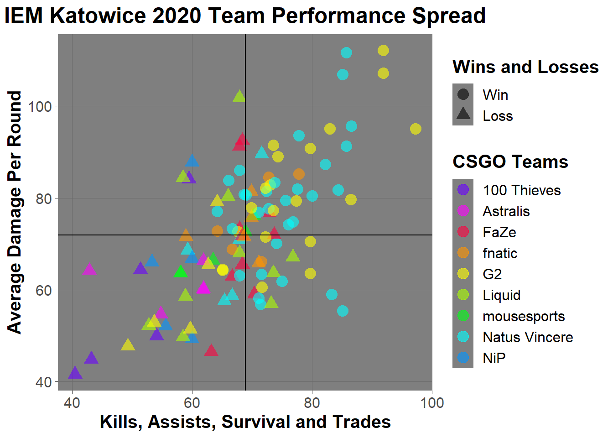

IEM (Intel Extreme Masters) Katowice is an international e-sports tournament held in Katowice, Poland. IEM Katowice stands out among other e-sport tournaments due to its prize pool of $500,000, as well as consistently breaking viewership records for Counter Strike tournaments with the IEM Katowice 2020 finals peaking at over 1 million viewers. Katowice 2022 has managed to surpass this, with viewership peaking at 1.12 million (Mira, 2022). IEM Katowice 2020 consisted of 16 professional Counter Strike teams battling it out over the course of 7 days.
Counter Strike: Global Offensive (abbreviated most times to CSGO) is a competitive First Person Shooter (FPS) game. Each game consists of up to 30 rounds, which are played by two teams consisting of five players each. The winning team is decided by whoever reaches 16 round wins first. Both teams start on a “side” either as “Terrorists” (T) or “Counter Terrorists” (CT), which they play until half time, where then both teams are force switched to play the other side (ex. team 1 started as T, and in half time they are switched to CT). Each side has a different objective and play style. The T side’s(offensive) objective is to plant a bomb at one of the two bomb sites on the map before the 1 minute 55 second round timer gets to zero, or eliminate the CT side. The CT side (defensive) must protect the bombsites, deny bomb planting, defuse the bomb (if planted), or eliminate the T side to win the round.
This study, seeks to look at the performance of professional players and their teams across the entire length of the tournament. The visualization will compare the players KAST score (Kills, Assists, Survival, Trades). The KAST score provides a more nuanced look into a players performance, by introducing more factors dependent on team work (such as time alive and utility assists). KAST is measured from 0%-100% (De Carlo, 2019)
The next comparison statistic will be Average Damage Per Round (ADR), as this provides a good gauge of individual match impact for the player as it averages out the damage which they cause to the other teams players round by round. This adds insight into statistics that will not count towards ones KAST, such as utility damage (grenades), damage from T-Side bomb explosions and, head shots (ex head shots have a higher damage value attributed to them, thus a player with a higher ADR will have a higher amount of head shots). This measure is continuous (De Carlo, 2019) .
The data sets were acquired via Kaggle.
The data set which was chosen for analysis was player data across tournaments.
In order to make extract only statistics from IEM Katowice 2020, the initial data frame was filtered.
Furthermore, we specifically look at the performance of the two finalist teams (Natus Vincere and G2) and see how they compared to the other participants. In order to do this, we filtered matches in which the team was Natus or G2 and the opponent was either Natus or G2.
#filtering teams and adding players to track the teams and the matches who ended up in the finals
dfnaviP <- dfpkato%>%filter(team == "Natus Vincere" | team == "G2" |
opponent == "Natus Vincere" | opponent == "G2")We were also curious about player performance across all teams, so we arranged the players by teams.
#arranging entire tournament into groups by team for ease of interpretation
katoPRGT <- dfpkato %>% group_by(team) %>% arrange(team)After this, we wanted to visualize the wins and losses of players throughout the tournament. Unfortunately, this was in another data set included from the initial kaggle download which focused on team results.This data set could not be simply added to the player statistics due to formatting and coding differences.
## date team_1 team_2 X_map result_1 result_2
## 1 2020-03-18 Recon 5 TeamOne Dust2 0 16
## 2 2020-03-18 Recon 5 TeamOne Inferno 13 16
## 3 2020-03-18 New England Whalers Station7 Inferno 12 16
## 4 2020-03-18 Rugratz Bad News Bears Inferno 7 16
## 5 2020-03-18 Rugratz Bad News Bears Vertigo 8 16
## 6 2020-03-17 Singularity Endpoint Overpass 13 16
## map_winner starting_ct ct_1 t_2 t_1 ct_2 event_id match_id rank_1 rank_2
## 1 2 2 0 1 0 15 5151 2340454 62 63
## 2 2 2 8 6 5 10 5151 2340454 62 63
## 3 2 1 9 6 3 10 5243 2340461 140 118
## 4 2 2 0 8 7 8 5151 2340453 61 38
## 5 2 2 4 5 4 11 5151 2340453 61 38
## 6 2 2 8 6 5 10 5247 2340456 71 41
## map_wins_1 map_wins_2 match_winner
## 1 0 2 2
## 2 0 2 2
## 3 12 16 2
## 4 0 2 2
## 5 0 2 2
## 6 0 2 2In order to get around this we took the same steps with the player data, and filtered and arranged the data to only Katowice 2020.
#filtering the data via match ID (4901) to only include matches and players during 2020 katowice
dfrkato <- dfr%>%filter(event_id == 4901)
#arranging katowice results by team for ease of interpretation
katoRGT <- dfrkato %>% group_by(team_1) %>% arrange(team_1)After this stage dummy coding was utilized to create a new column to show wins and loses. 0 was coded as a win and 1 as a loss. This new column was inserted into the filtered and arranged player statistics data frame.
#adding column of wins for overall player grouped stats, cols were dummy coded from dfrkato to be generalizable
katoPRGT["winner"] <- c(0,0, 0, 0, 0, 1, 1, 1, 1, 1, 0, 0, 0, 0, 0, 0, 0, 0, 0, 0, 1, 1, 1, 1, 1, 1, 1, 1, 1, 1, 1, 1, 1, 1, 1, 0, 0, 0, 0, 0, 0, 0, 0, 0, 0, 0,
0, 0, 0, 0, 1, 1, 1, 1, 1, 0, 0, 0, 0, 0, 0, 0, 0, 0, 0, 0, 0, 0, 0, 0, 0, 0, 0, 0, 0, 0, 0, 0, 0, 0, 0, 0, 0, 0, 0, 0, 0, 0, 0, 0, 1, 1, 1, 1, 1, 1, 1, 1, 1, 1, 0, 0, 0, 0, 0, 0, 0, 0, 0, 0, 1, 1, 1, 1, 1, 0, 0, 0, 0, 0, 1, 1, 1, 1, 1, 0, 0, 0, 0, 0, 1, 1, 1, 1, 1, 1, 1, 1, 1, 1, 1, 1, 1, 1, 1, 1, 1, 1, 1, 1, 1, 1, 1, 1, 1, 1, 1, 1, 1, 1, 1, 1, 1, 1, 1, 1, 1, 1, 1, 1, 1, 1, 1, 1, 1, 0, 0, 0, 0, 0
)After finishing the initial data clearing and filtering, it was noted that the initial data set which was imported did not contain the full match data for IEM Katowice 2020. In order to remedy this the data frame; katoPRGT (the filtered and cleaned data set) was opened, and the missing data was imputed from HLTV.org. The new data set has been uploaded to github for replicability.
The data set was then imported back into R Studio and named fullkatoplayerdf and then; based on the previous exploration of the data with differnt filters, it was decided to use a filter to track the teams Natus Vincere and G2 (the two finalists) as well as their opponents to reduce amount of data points on the plot. The data set was then arranged by date in order to decrease rendering times for the creation of the animation.
fullkatoplayerdf <- read.csv(here('data','fullkatoplayersdata.csv'))
#filter to only track matches with Natus, G2 and their opponents
filfullkatoplayerdf <- fullkatoplayerdf %>%filter(team == "Natus Vincere" |
team == "G2" | opponent == "Natus Vincere" | opponent == "G2")
#arranging data by team for animation render time decrease filfullkatoplayerdf
filfullkatoplayerdf <- filfullkatoplayerdf %>%group_by(date) %>% arrange(date)
#defining date as date as there were initial errors with the initial animation due to column values
filfullkatoplayerdf$date <- as.Date(filfullkatoplayerdf$date)
tail(filfullkatoplayerdf)## # A tibble: 6 × 9
## # Groups: date [1]
## date player_name team opponent kast adr rating hs winner
## <date> <chr> <chr> <chr> <dbl> <dbl> <dbl> <int> <int>
## 1 2020-03-01 AmaNEk G2 Natus Vi… 62.7 65.4 0.8 17 1
## 2 2020-03-01 Boombl4 Natus Vincere G2 85.1 107. 1.68 27 0
## 3 2020-03-01 Perfecto Natus Vincere G2 85.1 55.4 1.15 18 0
## 4 2020-03-01 electronic Natus Vincere G2 68.7 80.8 1.16 28 0
## 5 2020-03-01 flamie Natus Vincere G2 76.1 74.2 1.19 24 0
## 6 2020-03-01 s1mple Natus Vincere G2 86.6 95.7 1.52 23 0Initial color palettes did not allow for more than seven factors to be designated, or did not provide adequate visual distinction between data points therefore proving the necessity for the use of a custom color palette.
#Creating custom color palette
mycolors <- c("#6A00FF", "#FF00FF", "#FF0040", "#FF9500", "#FFFF00",
"#AAFF00","#00FF15", "#00FFFF", "#0095FF")e <- ggplot(filfullkatoplayerdf, aes(x = kast, y = adr, color = team)) +
geom_point(size = 4, alpha = .6, aes(shape = factor(winner))) +
#setting theme
theme_dark() +
#adjusting text and plot elements
theme(text = element_text (size = 15), title = element_text(face = 'bold'),
plot.title = element_text(hjust = .5), panel.grid.minor = element_blank()) +
#renaming the win loss legend
scale_shape_discrete(labels = c("Win", "Loss"), name = 'Wins and Losses') +
#adding the legend 2 title and loading custom colors
scale_color_manual(name = "CSGO Teams", values = mycolors) + #using custom color palette
#adding the quadrants, the values are the median of each measurement(adr and kast)
geom_vline(xintercept = 68.95)+
geom_hline(yintercept = 71.90) +
#adding labels
labs(title = "IEM Katowice 2020 Team Performance Spread",
x = "Kills, Assists, Survival and Trades",
y = "Average Damage Per Round")
e
ggsave(here('figs', 'figure1.png'))## Saving 7 x 5 in image#knitr::include_graphics(here::here("figs", 'figure1.png'))Visualization 1 shows the Average Damage Per Round(ADR) and the Kills, Assists, Survival and Trades (KAST) score of each player, and the team which the player is on as well if the player/team won or lost. The addition of the quadrants allows for more information to be extracted. With the lower left quadrant representing low to mid KAST and low to mid ADR, while the upper left quadrant shows high ADR and low to mid KAST scores. The lower right quadrant shows the mid to high KAST scores with low to mid ADR. The upper right quadrant shows scores which feature both mid to high ADR and mid to high KAST scores.
In order to make the plot more understandable an animation was created with gganimate.Unfortunately due to constraints with R Markdown to PDF and LaTeX to HTML, the animation cannot be embedded within the document, please check the “figs” folder to view the animation. The code is shown below.
#building the animation
require(gganimate)
graph2.animation <- e +
#defining what the transition will be based on
transition_time(filfullkatoplayerdf$date) +
#making the labels show the date based on the frame
labs(subtitle = "Tournament Date: {frame_time}") +
#adding pop for the subtitle for ease of interpretation
theme(plot.subtitle = element_text(color = "maroon", hjust = .5)) +
#telling the points to stay after each date to make frame transitions look smoother
shadow_mark()
#making the animation
animate(graph2.animation, height = 650, width = 800, detail = 15,
fps = 15, nframes = 675, duration = 45,
end_pause = 75, res = 100)
#saving animation
anim_save(here::here('figs','anifig.gif'))#knitr::include_graphics(here::here("figs", 'anifig.gif'))This animation adds a new dimension to the original plot and helps tell the story of Natus Vincere and G2’s journey to the finals. This visualization shows the variations in the players skill (each data point) and the team performance based on each date of the tournament. It provides an interesting insight into what factors (although only two) may contribute to a higher win rate.
The non animated visualization provided a solid look into the performance of the players and teams. It provides a good view of the overall performance of teams within the tournament, as it shows losing and winning teams scores on one plot. Furthermore, this visualization provides insight into how individual play style may effect win chance. Players on teams such as FaZe and Liquid have mid to high levels of ADR yet, lower and less consistency in overall KAST scores compared to players on Natus Vincere and G2.
The animated version works well in tandem with the non animated version as well as a standalone to further show the scores updating for each date of the tournament adding another dimension to the original non animated plot.
Due to the complexity and sheer amount of variables which can influence a team’s win rate and player skill, it would be extremely interesting to conduct structural equation modeling on more variables inherent to the player, such as reaction time, experience, map knowledge and team work. Another possibility, would be run mixed effect models on the data, in order to work out win chance in order to train machine learning models to predict match outcomes.